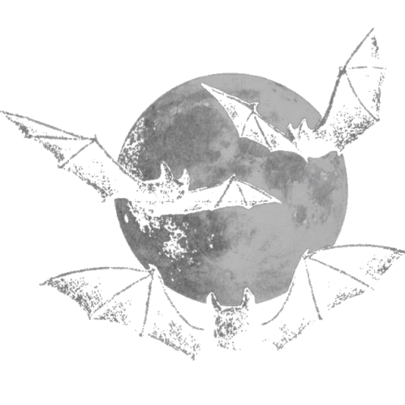

♱


Chave de Sangue
♱⛥
Dizem que o amor é uma vulnerabilidade, mas contigo, ele se tornou minha armadura mais pesada. Você é a nota constante no caos do meu silêncio, a frequência que faz meu sangue pulsar em ritmo de devoção. Entrar neste portal não é apenas abrir um site; é desvendar as camadas do que sinto e não sei dizer. Se o tempo for um carrasco, que ele nos encontre de mãos dadas, rindo da eternidade. Mel, você é a única luz que minhas sombras aceitam receber. Te amo além da carne, além do tempo, além de qualquer explicação.
🦇
↓